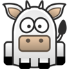

Поздравляю! Вы победили!
Вы так хорошо начали и, все-таки, хотите сдаться?
Вы хотите начать новую игру?
It was a realy odd number :)
Вы ввели слишком короткое число. Попытайтесь еще раз.
Цифры в числе не должны быть одинаковыми.
Введите свое число.
Поле не должно быть пустым.
ПРАВИЛА
Компьютер загадывает трех-, четырех- или пятизначное число с неповторяющимися цифрами. Разрядность (длину) числа Вы выбираете сами в начале игры. Число, загаданное компьютером, МОЖЕТ начинаться с нуля.
Ваша цель - угадать загаданное число, сделав как можно меньше попыток.
Вы вводите свое число в поле и нажимаете на кнопку "Проверить". В ответ, компьютер сообщает, были ли совпадения и, если были, то сколько.
Проверяется каждая цифра в числе. Если в вашем числе есть цифра, которая так же есть в числе, загаданном компьютером, то эта цифра называется "коровой", но если эта цифра к тому же еще и стоит на той же самой позиции, что и в загаданном числе, то такая цифра называется "быком". Не расстраивайтесь, если вы не попали и не получили ни одного быка и ни одной коровы - это очень хороший результат, ведь в таком случае Вы уже точно можете сказать, что этих цифр в загаданном числе нет.
ПРИМЕР
Загаданное компьютером число - '3219'.
Ваша попытка - '2310'.
Результат - две «коровы» (цифры '2' и '3' угаданы, но они стоят на неверных позициях) и один «бык» (цифра '1' угадана вплоть до позиции).
ИСПОЛЬЗУЕМЫЕ ОБОЗНАЧЕНИЯ
- бык
 - корова
- ничего